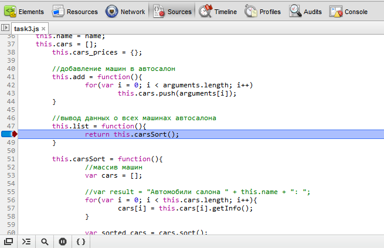
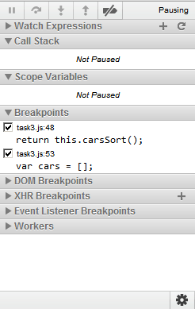
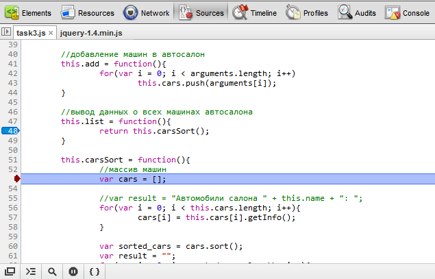

Использование инструментов отладки в Chrome
Chrome с входящими в состав дистрибутива инструментами Developer Tools по праву может считаться одним из лучших помощников в отладке клиентского кода.
Отладка
Использование breakpoints
Установка точки прерывания производится на вкладке Sources панели WebInspector:

Для начала отладки следует перезагрузить страницу, после чего произойдет остановка выполнения в точке прерывания.
Дальнейший процесс отладки можно регулировать при помощи панели, которая находится справа в WebInspector:

На этой панели можно лицезреть пять кнопок, которыми можно переходить между участками скрипта:
- Pause script execution (F8)
- Step over next function call (F10)
- Step into next function call (F11)
- Step out of current function (
+ F11) - Deactivate all breakpoints
Pause script execution переходит к следующей точке прерывания либо останавливает процесс отладки.
Step over next function call продолжает выполнение скрипта в рамках текущего блока, не переходя к коду вызываемых функций.
Step into next function call продолжает выполнение в рамках ьекущего блока, и, если встретится вызов внешней функции, то осуществит переход.Как, например, на следующем изображении: отладчик переходит к функции carsSort, вызов которой осуществляется из list().

Step out of current function заканчивает выполнение в пределах текущего блока кода.
Назначение кнопки Deactivate all breakpoints понятно, исходя из названия.